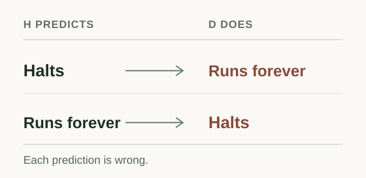
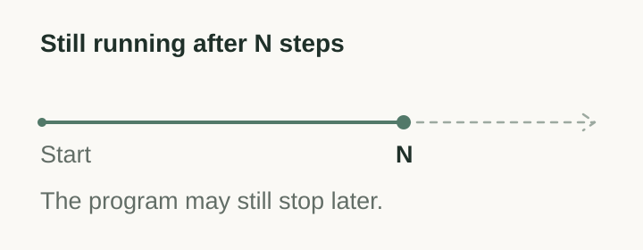
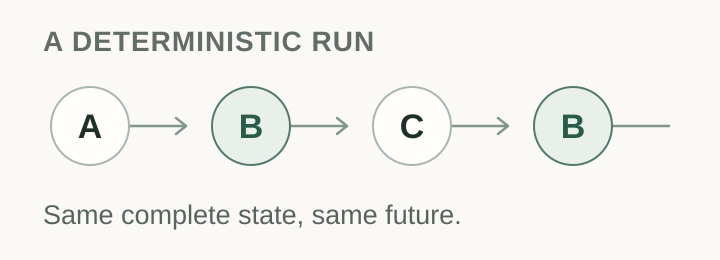

A program can stop, or it can keep running forever. Sometimes we can tell which will happen just by reading it. But there is no single algorithm that can correctly answer that question for every program and every input.
That is the halting problem. It remains unsolvable even if we imagine a machine with as much memory as its calculation needs. To see why, we can build a program that does the opposite of what the supposed predictor says.

What is computation?
Computation is a process of following exact rules to transform information. An effective procedure is a finite set of instructions that can be followed mechanically. Adding two numbers is one: a person with pencil and paper or a machine can follow the same rules and reach the same answer.
The instructions can be finite even when the process never finishes. For a procedure to compute an answer on a given input, it must produce that answer after a finite number of steps.
A Turing machine is a simple mathematical model of such a process. It reads and writes symbols on a tape according to a fixed set of rules. The tape has no fixed storage limit, but the machine still takes one step at a time. After any finite number of steps, it has used only a finite portion.
In Effective Computation by Humans and Machines, philosopher Oron Shagrir traces how this idea developed from the ideal of a human following mechanical rules to questions about machine computation. Following a procedure is a form of computation; this does not establish that all human thought is algorithmic.
The prediction we want
Some predictions are easy. A program that immediately returns will halt. An unconditional loop with no exit will run forever.
Now ask for much more: a predictor we will call H. Give it any program and input. It must finish its own analysis and answer either “halts” or “runs forever.” It must be right every time.
Being right when it answers is not enough. A predictor that sometimes runs forever itself, or says “I don't know,” has not solved this problem.
A prediction designed to fail
Suppose H exists. We can use it to construct another program, D. Give D a program's description. It asks H what that program will do when given its own description as input. Then D does the opposite: if H predicts a halt, it loops; if H predicts a loop, it halts.
Now give D its own description. Call that description d. What does H predict for D(d)?

If H says “halts,” D(d) runs forever. If H says “runs forever,” D(d) halts. Either answer is wrong. Since H was supposed to finish and be right for every program and input, it cannot exist.
The program does not somehow halt and run forever at once. The contradiction tells us that our starting assumption, a universal predictor with those guarantees, was impossible. The construction is an example of diagonalization: it uses a proposed general method to create a case that defeats it.
See the construction in code
Here H is the hypothetical predictor. The input code is a description of a program; H(code, code) asks what that program does on its own description.
def D(code):
if H(code, code) == "halts":
while True:
pass
else:
returnGive D its own description d. Because H is assumed to terminate on every input, the call H(d, d) must return one of the two answers. Each leads to the opposite behavior.
Try the two predictions
Predict what D(d) will do. The thought experiment shows how D responds to that answer.
This demonstration does not run an infinite loop.
I use death as a metaphor for the end of a computation. The result does not say that every machine is unable to predict its own end. A program can, for example, count down from ten and stop. The impossibility concerns a single computable procedure that decides the question for all programs and inputs. An algorithm that always gave the exact stopping step, while also identifying programs that never stop, would solve the same yes-or-no problem. It cannot exist either.
Why not wait and see?
Running a program can tell us that it halts: eventually, we see it stop. But observing it run for a million steps does not tell us whether it will stop on the next step. The same is true after a trillion steps, or any other finite wait.

We can sometimes prove nontermination without waiting forever. An invariant may show that an exit condition is unreachable. The point is that no algorithm can settle every case correctly and always finish.
Where does Gödel fit?
Gödel's incompleteness theorems ask a related question about proof: what can a formal mathematical system establish from its own rules? Gödel showed that sufficiently expressive, consistent theories with mechanically checkable proofs have limits on what they can prove. Turing's result concerns what an algorithm can decide. The questions are different, but both use precise descriptions of symbolic systems to expose a limit.
How a question about proof becomes a program
Take an effectively axiomatized theory T with checkable, enumerable proofs. Write a program that searches through those proofs and stops if it finds a proof of 0 = 1. If such a proof exists, the program eventually halts. If the theory is consistent, it runs forever.
For a sufficiently strong, consistent theory with the usual formalization of arithmetic and proof, Gödel's second incompleteness theorem says that the theory cannot prove its own consistency. Such a theory can formalize the connection above, so it cannot prove that this particular search program runs forever. A stronger theory may be able to prove that fact.
There is another connection between programs and proofs. Under the Curry–Howard correspondence, propositions can be represented as types and proofs as terms. An arbitrary program is not automatically a proof; the correspondence depends on the language and the rules used to check it.
What can we still know?
A general solution is impossible, but many particular programs can be analyzed. A useful restriction can make the question decidable.
Imagine a deterministic system with finitely many possible complete states and no changing outside input. If it has not halted and reaches a state it has already visited, its future will repeat. With only finitely many states, it must eventually halt or repeat a state. Checking for that repetition decides halting for this model.

This does not make every finite model practical to explore. It does show why the structure of a problem matters. Model checking, invariants, and termination arguments can establish results for specified systems, even though no method can decide halting for every unrestricted program.
In program synthesis, I find this distinction useful. We can search for an invariant, a better representation, or a restricted language that makes the question tractable. A restriction must preserve the property we care about, and it may exclude some programs we would otherwise want to analyze.
What does this tell us about nature?
The part that interests me most is the unbounded tape. We remove a fixed memory limit, yet a limit on prediction remains. Does that tell us something about the physical world, or about the mathematical model we chose?
The halting theorem is a mathematical result about computation in the Turing model. The Church–Turing thesis connects that model to the informal idea of an effective procedure. A further claim, that every physically realizable computation falls within the Turing model, requires assumptions about physics. The theorem alone does not settle every hypothetical account of computation in nature.
Nor does it say that physical systems, organisms, or individual machines can never have predictable endings. It tells us where a particular promise fails: no ordinary algorithm can always decide the eventual behavior of every program and input, even with an unbounded tape.
That still leaves room for discovery. We can prove particular programs terminate, identify loops, and find representations that expose structure we could not previously see. The useful question is which assumptions make a particular prediction possible.
Mental toolkit
Four ideas to carry away from the argument.
Effective procedure
A finite recipe of mechanical steps.
Definition and source
It gives a defined answer after finitely many steps on the relevant input. A finite program may instead run forever.
Halting problem
Will this program ever stop on this input?
Definition and boundary
No single computable procedure terminates with the correct yes-or-no answer for every program and input. Particular cases may be decidable.
Diagonalization
Build a case that defeats a proposed general method.
Definition and boundary
Here the constructed program receives its own description and reverses the predictor's answer. Self-reference alone need not cause a contradiction.
Decidable fragment
A restricted class with an answerable question.
Definition and boundary
A deterministic closed finite-state system permits a halt-or-repeat check. Other restrictions need their own justification.
Sources and further reading
- Oron Shagrir, Effective Computation by Humans and Machines, especially §1–2, on effective procedures and the shift from idealized human calculation to accounts of machine computation.
- Alan M. Turing, On Computable Numbers, with an Application to the Entscheidungsproblem, received in 1936 and published in 1937. The paper's diagonal argument precedes the standard modern presentation of the halting problem used here.
- Stanford Encyclopedia of Philosophy, Gödel's Incompleteness Theorems, for the formal assumptions behind the incompleteness results.
- Stanford Encyclopedia of Philosophy, The Church–Turing Thesis, for effective methods and their relationship to claims about physical computation.